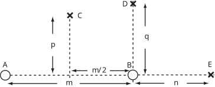

Long description: Fig2_1

Alt text: A diagram illustrates points A, B, and E along a horizontal line, with vertical arrows labeled p and q indicating magnitudes, and horizontal distances labeled m and n.
This description was generated by AI and has not been verified by a human. If you spot an error, please use the feedback link below.
- The image displays a horizontal line segment containing three labeled points: A, B, and E.
- Point A is on the left, and point E is on the right.
- A vertical dashed line is drawn passing through point B.
- A vertical dashed line passes through point C, which is located vertically above point B, suggesting a source or point of measurement.
- An upward vertical arrow labeled 'p' originates near point A.
- A second upward vertical arrow labeled 'q' originates near point B.
- A downward vertical arrow is drawn from point C, indicating a vertical distance or magnitude related to 'p' and 'q'.
- The horizontal distance between point A and point C is labeled 'm'.
- The horizontal distance between point B and point E is labeled 'n', and the segment connecting A to B is labeled 'm/2'.
- Point C is marked with a cross symbol, suggesting it is a source point, and point D is marked with a cross symbol, also appearing as a source point above the line segment connecting A and E.